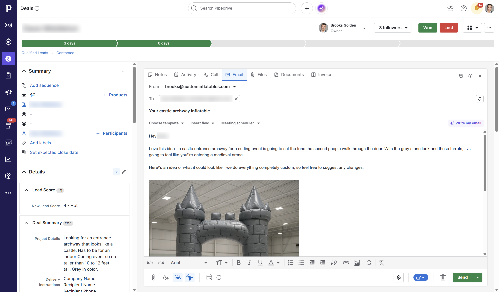
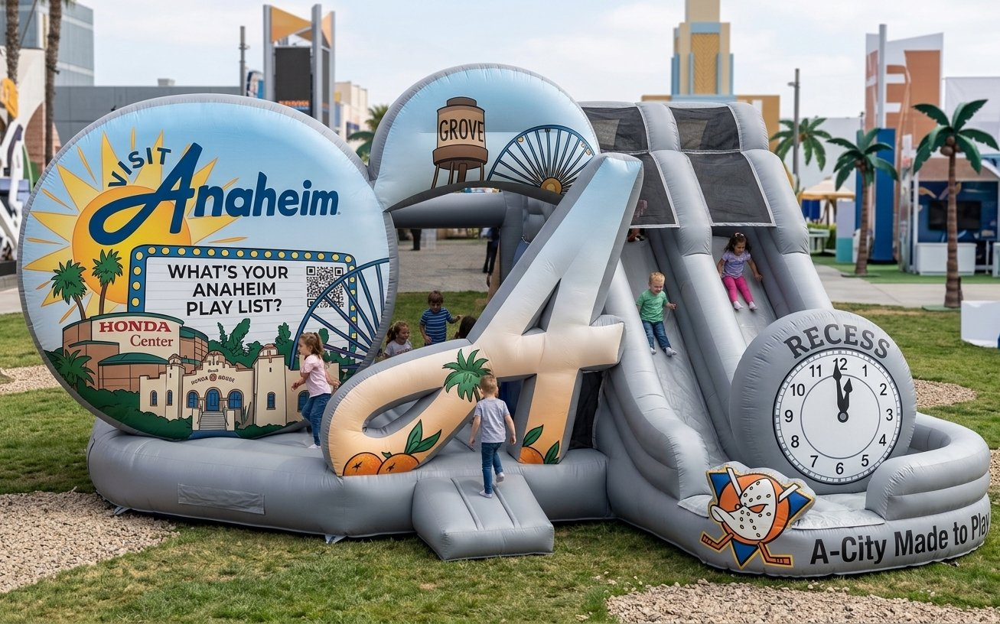
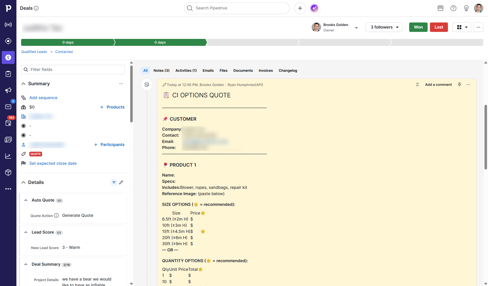
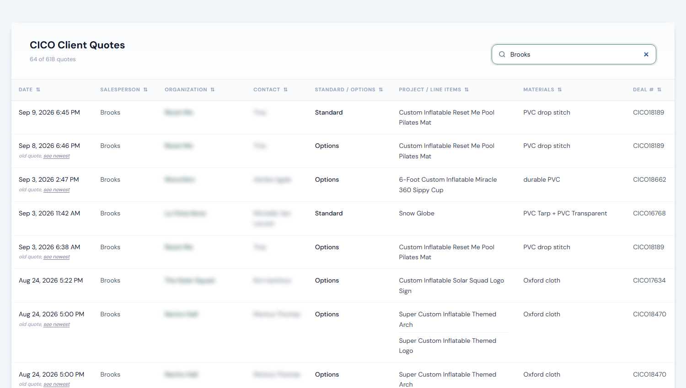
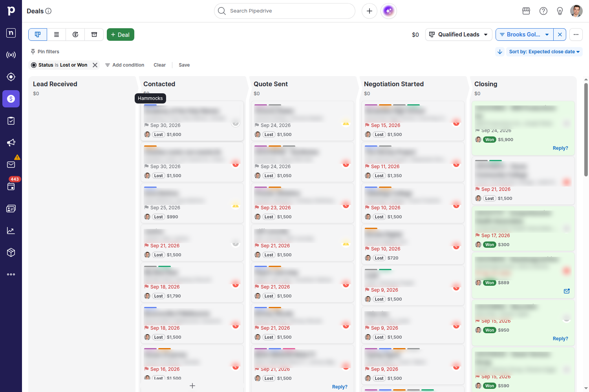
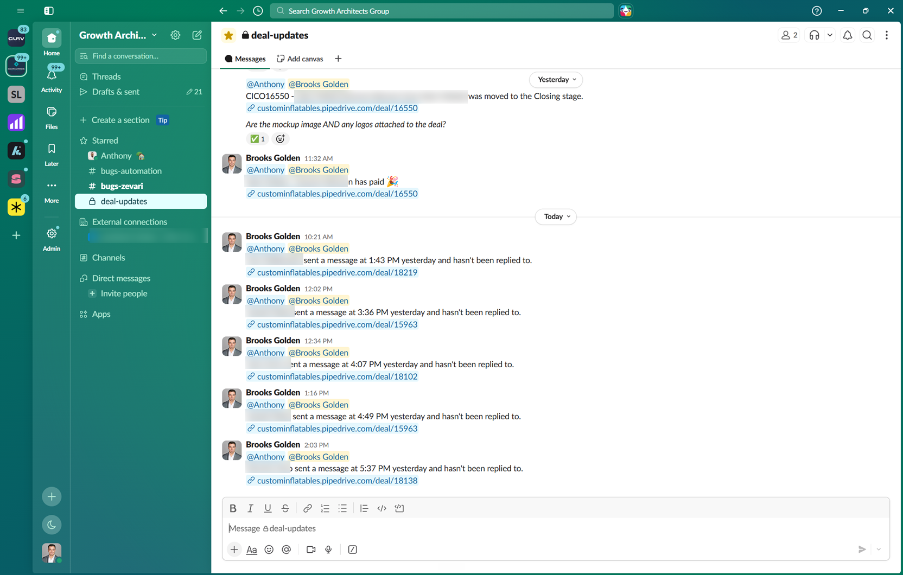
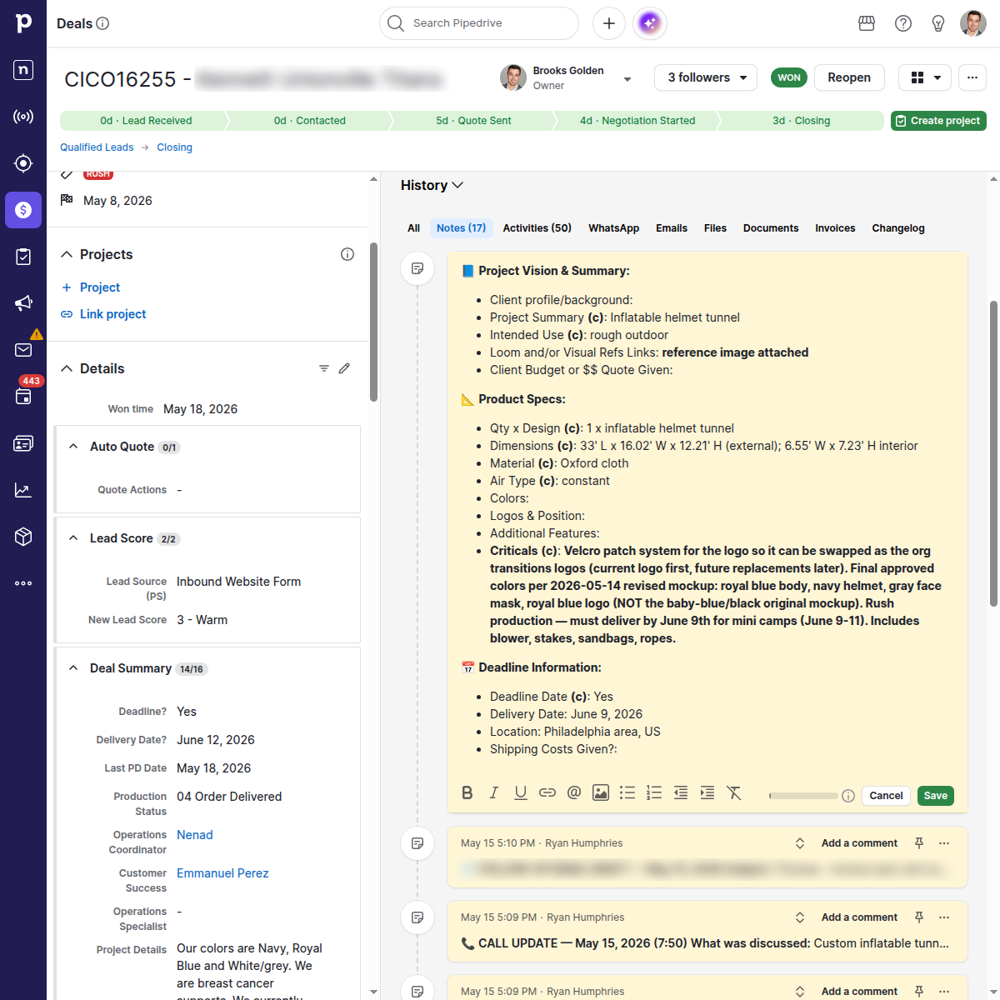

Conversion, ranked #1 of 17 active reps
Founder case study · Custom manufacturing · 2026
AI enablement at
Custom Inflatables
A sales role went from roughly 10-hour days to 4–8-hour days, while Brooks Golden ranked first for conversion on the company’s active-rep leaderboard.
The work connected the entire customer journey: the first reply, the product concept, the quote, the next call and the production handoff.
Daily work, down from roughly 10 hours in busy season
189 replies from 388 emails classified as first responses
These figures cover different periods and sources. Hours are self-reported; the email analysis includes messages from before and during implementation. Method and limitations
The results
Less administration.
Strong sales performance.
Brooks joined in February. A manual transcript parser came first in March. Connected automation expanded in April and May. Brooks considers June the first month the full system was established; refinements continued through the summer.

Monthly new-lead conversion
Company reporting · February–August 2026June: 32 new orders / 124 adjusted leads. Company workbook, PS Stats J73.
MarchTranscript-to-quote tool
AprilConnected CRM workflows
June onwardFull system in place; continued refinement
The workbook’s formula is (orders − returning orders) / (leads − returning orders). This is an observed performance trend, not an isolated estimate of AI’s causal impact.
The connected workflow
Each automation removed a different obstacle.
A quick reply starts the conversation. A clear visual and quote make the decision easier. Follow-up keeps it moving. Shared context carries the promise into production.
01 · First response and reply drafts
Start with the customer’s actual project.
New inquiries became relevant first responses using the project details and deadline. Later replies could arrive with a draft already prepared from the deal’s context.
July email archive59.3%
73 replies from 123 first-response emails. Less composing from scratch, with the customer’s request still fresh.
July 1–29. Replies counted before the next outbound touch. Brooks recalls an earlier 10–20% reply rate; the comparison is not a controlled test.“Thanks for getting back so quickly Brooks.”
Customer email, July 14, 2026. Name omitted.
July 15 · Concept selected“I prefer #3 if you can get me a quote for that, I would appreciate it.”
July 22 · Order requestedThe same customer requested the six-foot version and selected add-ons.
One archived conversation shows the steps connecting. It illustrates the workflow, not an isolated measure of automation’s effect on the sale.
02 · Product concepts inside the email
Show the customer what they could buy.
The workflow combined project-specific copy, generated concepts and relevant past-project examples inside Pipedrive. The salesperson could review the message in the same place they managed the deal.
One documented customer journeyConcept #3
Chosen the day after the first response. Seven days later, the customer requested the order and add-ons.
July 14–22 email thread quoted above. A different project appears in the screenshot below.
What made the images useful
Detailed instructions for a producible concept.
Brooks found that good images prompted more replies and design collaboration. Some buyers would not proceed until they could see what they were buying. That observation is anecdotal; a separate image-driven conversion lift was not measured.
- Start with the actual request. Reconcile the transcript, deal details, references and relevant brand context.
- Preserve the design. Match requested dimensions, proportions, colors and logo placement.
- Show realistic construction. Flexible panels, seams and material-specific texture. Fine details belong in printed artwork, not impossible sculpted surfaces.
- Review the promise. The salesperson checks what will be shown to the buyer; a concept is not engineering approval.
See two full-size concepts from the project archive


Separate archived projects, not the images in the email screenshot. These are generated concepts, not delivered-product photographs or brand endorsements.
03 · Transcript to quote
A prepared quote for every deal.
A human makes the final edits.
The transcript parser extracted requirements from the call. Connected automation prepared the quote, ready for the salesperson to revise before sending.
Before · Manual preparation10–15 min
Recall the call and fill the quote line by line.
After · Review and editing1–3 min
Review the automatically prepared quote and make revisions.
Brooks’s estimates of hands-on work per quote. Automated processing time is separate; these are not time-tracking measurements.


Less re-entry. Call requirements, quantities, materials and pricing rules became a first draft.
A clearer buying decision. The salesperson refined the offer instead of rebuilding it.
A shared source of information
Make past work searchable.
A centralized index made the product, material, quote type and deal reference searchable. A separate project-photo catalog helped the salesperson find relevant examples.
Archived quote index378
Quote records attributed to Brooks or Quote Automation. Prior work became reusable information in one search.
Record count includes revisions, not 378 unique customers. Screenshot uses the index’s actual Brooks search.
04 · Follow-up, calls and pipeline accountability
Make the next human action visible.
With 50–80 deals in play, memory was not a reliable follow-up system. Prepared messages, call reminders and labels made outreach consistent. Brooks reports that deals stopped falling through the cracks once the system was in place.
Brooks’s typical active pipeline50–80 deals
A visible next step for each customer. Labels showed who needed a call, a reply or a quote review, so the day started with action instead of a fresh pipeline assessment.
Brooks estimates inconsistent follow-up had previously cost 1–3 potential deals per month. This describes the earlier risk, not a measured number of deals recovered by automation.
The action behind the reminder
“Call or send SMS to the prospect:”
The workflow supplied context and a next step. Brooks used the phone call to build the relationship.
Inbox and Slack safeguards
A read email still needed an answer.
Unanswered incoming emails were marked unread again, keeping them visible. Slack brought customer-response warnings and closing milestones to the team.
20-hour reply checkFlag a verified unanswered customer reply, with stage and weekend rules.
24-hour follow-up checkSurface silent new deals for review instead of relying on memory.

Entering Closing
Confirm the mockup and logos are attached before the next team takes over.
Invoice paid
Notify the team after a live invoice badge confirms payment.
Customer waiting
Identify an unanswered message and link straight to the deal.
Quote still to send
Surface a pending send-quote activity for salesperson action.
Won-deal handoff
Carry selected scope and delivery context into the customer-service workflow.
Automation needs repair
Route a failed workflow into the repair process, with evidence.
The screenshot shows the first three alert types. Quote reminders and repair alerts are documented in the system; won-deal handoff is a separate workflow. Notification rules suppressed repeated alerts for the same event and distinguished business milestones from technical failures.
05 · Customer service and engineering handoff
Carry the deal’s context into delivery.
The SmartCard assembled the Project Vision & Summary from the deal. Customer service and engineering received the product, requirements, revisions and delivery context without rebuilding the sales conversation.
Details preserved in this handoffJune 9
The customer’s rush deadline, alongside exact dimensions and approved colors. The note also preserves the interchangeable-logo requirement and included accessories.
Visible requirements from one real handoff. Time savings were not separately tracked; the visible result is a shared, structured delivery brief.
How it worked
How the automation ran
and stayed accountable.
The implementation worked through Pipedrive’s interface without Pipedrive API access. Running it reliably required scheduling, verified outcomes and a repair process.
Brooks / operatorReview drafts · call customers · maintain the system
Private remote access↔Log in, inspect, troubleshoot
Cloud execution
Virtual private server
Scheduled jobsOne shared browserSaved deal context
Open the CRM, read the deal, prepare the next action and verify the result.
Deal details · replies · call transcripts←
→Drafts · quotes · reminders · handoff notes
Authenticated browser interactionThe customer record
Emails, deal stages, product requirements and the salesperson’s next action.
AI work
Claude / Codex
Context + task →← Draft + structured output
Task-specific models, cached context, bounded retries and provider fallback.
Reusable outputs
Quotes, images and handoff context
Stored outputs feed the CRM and the customer service / engineering handoff.
Verification and repair
Check the outcome. Feed fixes back.
A saved draft, email or activity must actually exist. Unresolved failures become tracked repair work.
- Outcome checksVerify the customer action
- Paperclip + QA botTrack and diagnose the issue
- ArchitectReview the durable fix
- AuditorIndependently verify it
Verified fixes return to the VPS workflow. Failed checks return to the repair queue.
See the reliability and cost controls
One shared browser
A browser lock prevented workers from navigating over one another. Queues let delayed jobs release the browser and try again later.
Outcome monitoring
Checks looked for uncontacted leads, missing activities and overdue replies. Unresolved failures entered the repair loop.
Evidence-based repairs
Changes required a bounded fix, relevant checks and verification of the affected customer outcome. Independent review reduced recurring failure classes.
Useful notifications
Escalation rules distinguished problems needing human action from recoverable or duplicate events.
Scheduled work
Workers ran at defined times and stages, with business-hour and weekend rules. Timing depended on the customer promise.
Provider flexibility
Named Claude, Codex and mixed profiles separated routing from workflow logic. Fallback and cooldown rules handled model limits.
Why this matters to Keelwater
The workflow pattern transfers.
The implementation must be specific.
This is a prior founder implementation in custom manufacturing. It demonstrates hands-on delivery; it is not a claim of accounting-firm results.
| Demonstrated here | Possible accounting application | Purpose |
|---|---|---|
| Transcript → quote | Discovery call → draft scope or proposal | Reduce re-entry |
| Deal context → prepared reply | Client context → draft status update | Respond with relevant information |
| Next-action and reply checks | Missing-document and deadline follow-up | Keep work moving |
| Deal → production handoff | Onboarding → delivery-team handoff | Preserve context |
Accounting applications above are prospective and require firm-specific access, controls, professional review and measurement.

Brooks Golden · Founder, Keelwater
Designed, implemented and operated the workflow while carrying the sales role. The aim was to create capacity and use it to serve customers better.
Sources, measurement and what these results establish
Conversion and ranking
February–June values come from the company’s Custom Accounting Overview - Through June 2026, PS Stats, cells F73:J73. The workbook reports 107 new orders / 527 adjusted leads, or 20.3%, cumulatively through June, ranked first among its 20 listed reps. The company moved reporting from the spreadsheet to its custom tracking tool. July’s 24.1% and August’s approximate 22.5% were supplied by Brooks from that tool.
The later Customs OS screenshot reports 20.5% and rank 1 among 17 active reps. Its visible January–September date filter extends beyond Brooks’s September 18 final day. The dashboard’s conversion is preserved as reported; dividing its total wins by total leads gives a different figure. The two reports cover different periods and populations.
Email replies
A July 31 archive analysis classified 388 outbound messages as first responses, dated February 5–July 29. Of those, 189 received a reply before the next outbound touch; outbound bursts within six hours were grouped. This classification includes messages before full automation. The July subset contains 123 first-response emails and 73 replies (59.3%). Brooks recalls an earlier 10–20% reply rate, but that baseline has not been independently established.
Follow-up and implementation
Brooks describes a typical active pipeline of 50–80 deals. He estimates earlier inconsistent follow-up cost 1–3 potential deals a month and reports that deals stopped falling through the cracks after the system was established. These are operator recollections, not an audited lost-deal or recovered-revenue analysis. He dates the first fully established system to June after an April–May rollout. The 20-hour unanswered-reply obligation and 24-hour silent-deal review are separate configured controls, not average response times.
Time and attribution
The roughly 10-hour versus 4–8-hour days, 10–15 minutes of manual quote preparation and 1–3 minutes of automated-quote review/editing are Brooks’s estimates, not time-tracking measurements. Lead mix, seasonality and sales experience may also affect conversion. The evidence demonstrates the implementation and observed outcomes; it does not isolate the effect of each automation.
Visual evidence
The leaderboard, email editor and blank quote note come from original screenshots. The expanded SmartCard and labeled pipeline were captured in Pipedrive; the generated quote and filtered quote index were rendered from their original HTML. The archived index contains 378 records attributed to Brooks or Quote Automation, including revisions. Customer identifiers are blurred. Product concepts are original generated candidates. Raw customer records remain private. Pipedrive and Tailscale logos identify the tools used and do not imply endorsement.
AI enablement for tax and CAS firms
Where does your team
lose time between steps?
Start with a real workflow, identify the repeated work and measure what changes.
Discuss a design partnership